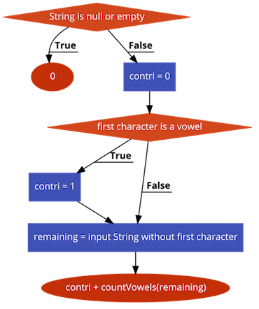
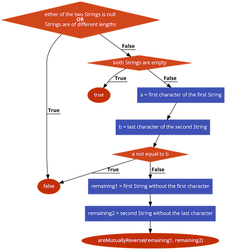
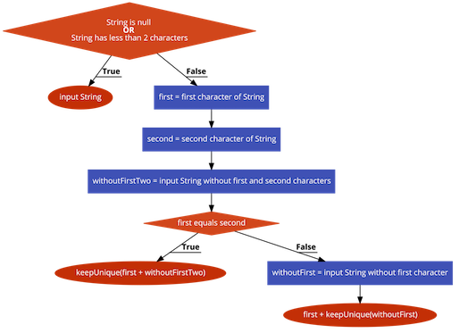

Recursion with String data
Assumed Knowledge:
Learning Outcomes:
- Be able to trace recursive functions in the context of String data.
- Be able to write recursive functions in the context of String data.
Author: Gaurav Gupta
Useful String methods
To use recursion on Strings, following methods are very useful:
str.charAt(int): returns character at given index, raisesStringIndexOutOfBoundsExceptionif index invalid. Note: first character is at index 0, last character at indexstr.length()-1.str.substring(int): returns String object starting at given index (inclusive) to the end of the String, raisesStringIndexOutOfBoundsExceptionif index invalid.str.substring(int, int): returns String object starting at first index (inclusive) to the second index (exclusive), raisesStringIndexOutOfBoundsExceptionif indices or range invalid.str.indexOf(char/String): returns the index of the first occurrence (if any) of the passed character or String, -1 if not found.str.indexOf(char/String, int): returns the index of the first occurrence (if any) of the passed character or String, starting the search at passed index (second parameter), -1 if not found.str.equals(String): returnstrueif the two Strings are identical (case sensitive).str.equalsIgnoreCase(String): returnstrueif the two Strings are identical (case insensitive).
Examples of these methods in action:
String a = "Super Nintendo Chalmers is in?";
String b = "Me fail English!? That's unpossible!";
char ch1 = a.charAt(2); //'p'
char ch2 = b.charAt(2); //' ' (space)
char ch3 = a.charAt(-1); //INVALID - StringIndexOutOfBoundsException
char ch4 = b.charAt(1000); //INVALID - StringIndexOutOfBoundsException
int idx1 = a.indexOf('e'); //3
int idx2 = b.indexOf('e'); //1
int idx3 = a.indexOf('x'); //-1
int idx4 = b.indexOf('$'); //-1
int idx1 = a.indexOf('e'); //3
int idx2 = b.indexOf('e'); //1
int idx3 = a.indexOf('x'); //-1
int idx4 = b.indexOf('$'); //-1
int idx5 = a.indexOf("in"); //7
int idx6 = a.indexOf("in", 10); //27
String sub1 = a.substring(1); //"uper Nintendo Chalmers is in?"
String sub2 = b.substring(3,7); //"fail"
String sub3 = a.substring(5, 1); //INVALID RANGE - StringIndexOutOfBoundsException
String sub4 = b.substring(-5, 10); //INVALID STARTING INDEX - StringIndexOutOfBoundsException
Basic strategy
When designing and implementing recursive solutions in the context of String data, the key strategy is to
- slice a String,
- operate on the immediate portion, and,
- call the recursive method on the remaining String
Example 1: count the number of vowels in a String
PROCESS: countVowels(String)
- If String is
nullor empty, return 0. - Extract the first character.
- Store 1 into variable
contriif first character is a vowel, 0 otherwise. - Extract the String without the first character (
remaining). - Return
contri + countVowels(remaining)

public static int countVowels(String str) {
if(str == null || str.isEmpty()) {
return 0;
}
char first = str.charAt(0);
String vowels = "aeiouAEIOU";
int countFirstVowel = 0;
if(vowels.indexOf(first) >= 0) {
countFirstVowel = 1;
}
String remaining = str.substring(1);
return countFirstVowel + countVowels(remaining);
}
Sample call chain:
countVowels("Aliens") returns 1 + countVowels("liens")
countVowels("liens") returns 0 + countVowels("iens")
countVowels("iens") returns 1 + countVowels("ens")
countVowels("ens") returns 1 + countVowels("ns")
countVowels("ns") returns 0 + countVowels("s")
countVowels("s") returns 0 + countVowels("")
countVowels("") returns 0
countVowels("s") returns 0 + 0 = 0
countVowels("ns") returns 0 + 0 = 0
countVowels("ens") returns 1 + 0 = 1
countVowels("iens") returns 1 + 1 = 2
countVowels("liens") returns 0 + 2 = 2
countVowels("Aliens") returns 1 + 2 = 3
Example 2: check two Strings are reverse of each other
PROCESS: areMutuallyReverse(String, String)
- If either of the two Strings is
nullor if Strings are of different lengths, returnfalse. - If both Strings are empty, return
true. - Extract the first character of the first String (
a). - Extract the last character of the second String (
b). - If
a != b, return false. - Extract the first String without the first character (
remaining1). - Extract the second String without the last character (
remaining2). - Return
areMutuallyReverse(remaining1, remaining2)
Sample call chain 1:
areMutuallyReverse("super", "reap") returns false (as the two Strings are of different lengths)
Sample call chain 1:
areMutuallyReverse("super", "reap") returns false (as the two Strings are of different lengths)
Sample call chain 2:
areMutuallyReverse("super", "reads") returns areMutuallyReverse("uper", "read")
areMutuallyReverse("uper", "rope") returns false
areMutuallyReverse("super", "reads") returns false
Sample call chain 3:
areMutuallyReverse("pat", "tap") returns areMutuallyReverse("at", "ta")
areMutuallyReverse("at", "ta") returns areMutuallyReverse("t", "t")
areMutuallyReverse("t", "t") returns areMutuallyReverse("", "")
areMutuallyReverse("", "") returns true
areMutuallyReverse("t", "t") returns true
areMutuallyReverse("at", "ta") returns true
areMutuallyReverse("pat", "tap") returns true

public static boolean areMutuallyReverse(String str1, String str2) {
if(str1 == null || str2 == null) {
return false;
}
if(str1.length() != str2.length()) {
return false;
}
char a = str1.charAt(0);
char b = str2.charAt(str2.length()-1);
if(a != b) {
return false;
}
String remaining1 = str1.substring(1);
String remaining2 = str2.substring(0, str2.length()-1);
return areMutuallyReverse(remaining1, remaining2);
}
Example 3: Remove consecutive occurrences of any character with a unique instance
Example: keepUnique("aaaaaaabbbbbcccccddd") returns "abcd"
PROCESS: keepUnique(String)
- If String is
nullor has less than 2 characters, return the String itself. - Extract the first character in a variable
first. - Extract the second character in a variable
second. - Extract the String without the first two characters (
withoutFirstTwo). - If
first == second, returnkeepUnique(first + withoutFirstTwo)(since it’s still possible that first and third might are the same) - Extract the String without the first character (
withoutFirst). - Return
first + keepUnique(withoutFirst)

public static String keepUnique(String str) {
if(str == null || str.length() < 2) {
return str;
}
char first = str.charAt(0);
char second = str.charAt(1);
String withoutFirstTwo = str.substring(2);
if(first == second) {
return keepUnique(first + withoutFirstTwo);
}
String withoutFirst = str.substring(1);
return first + keepUnique(withoutFirst);
}